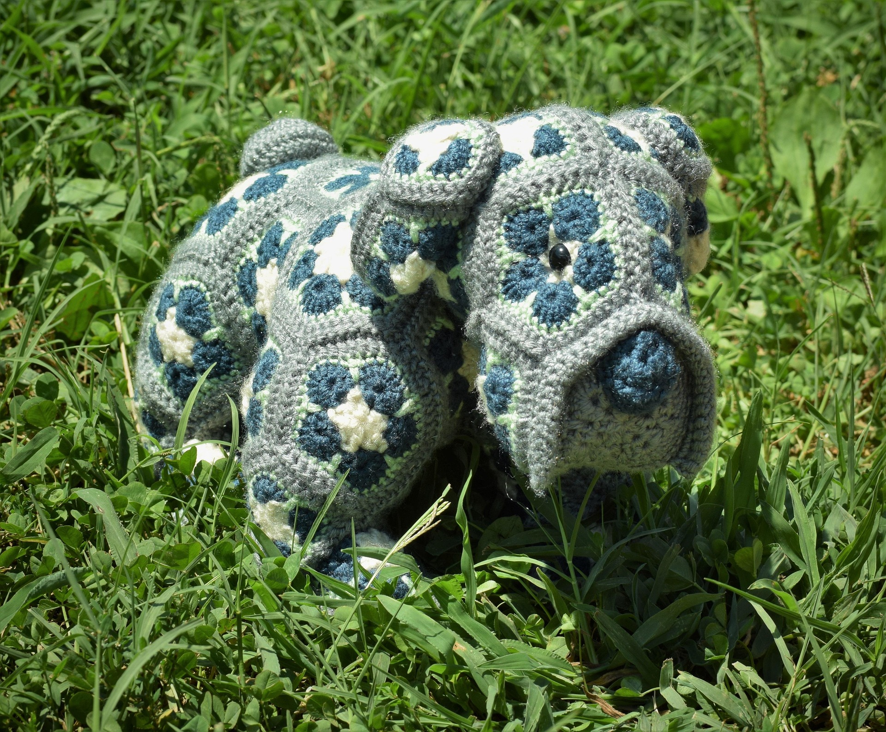
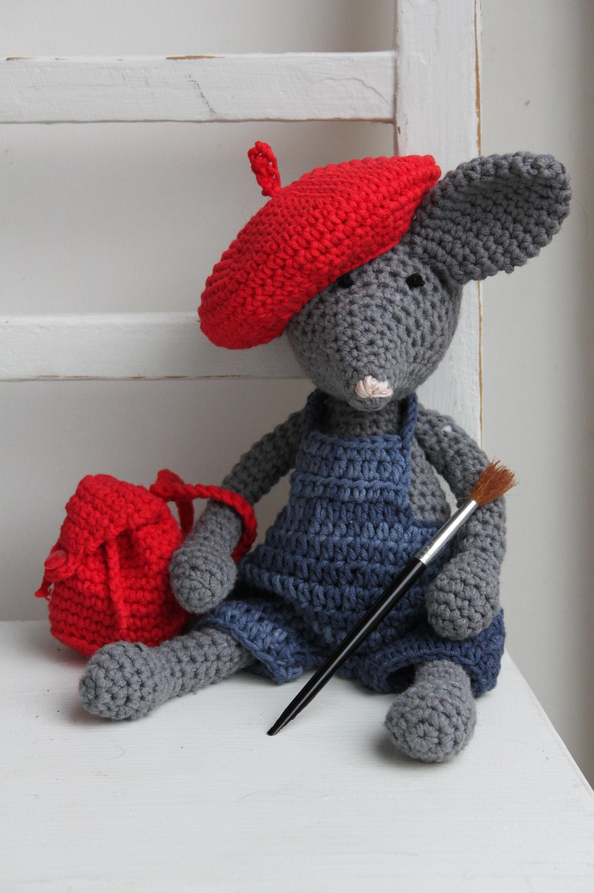
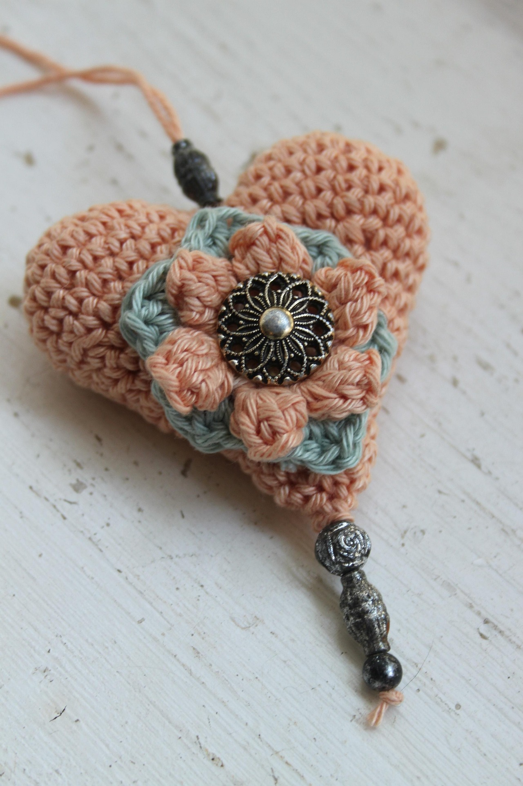
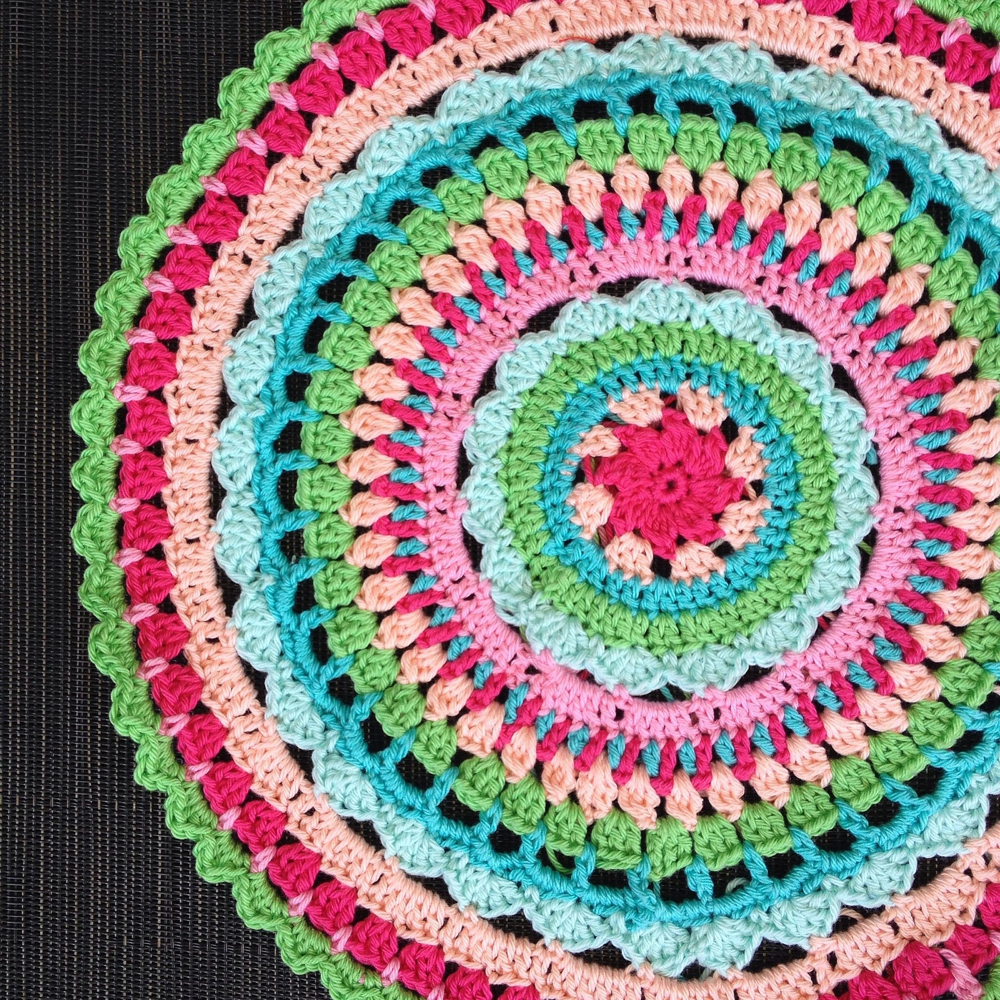
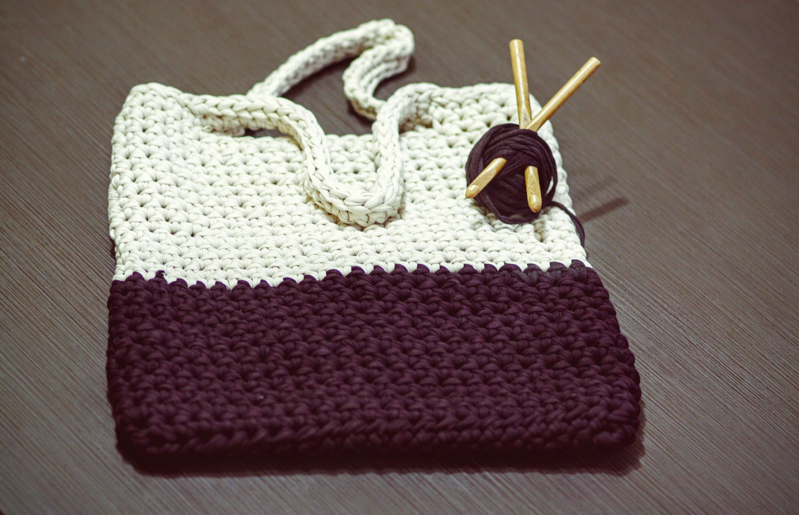
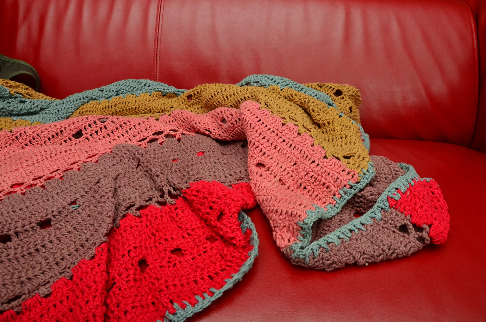
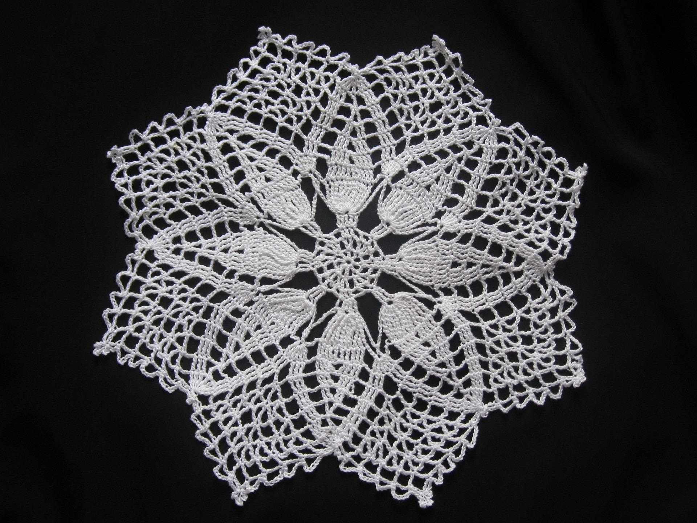
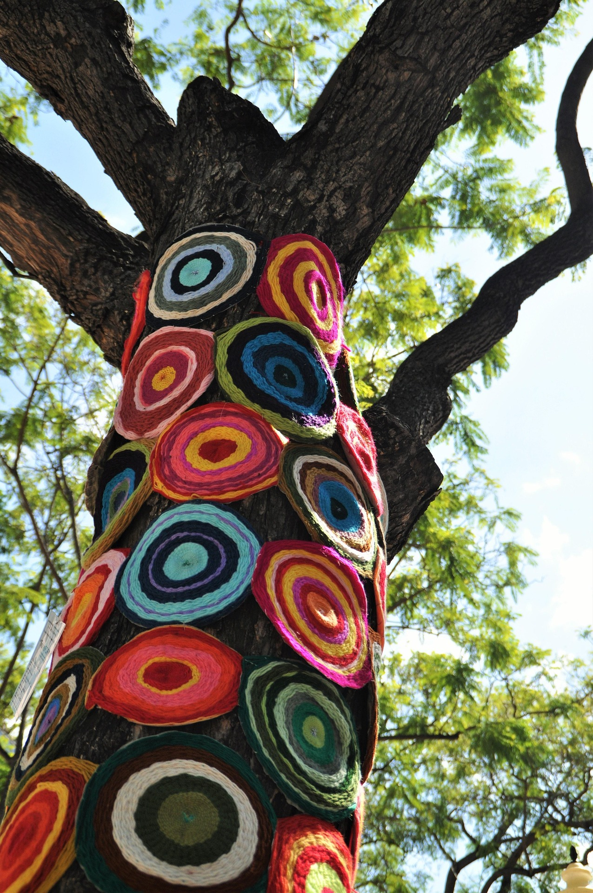
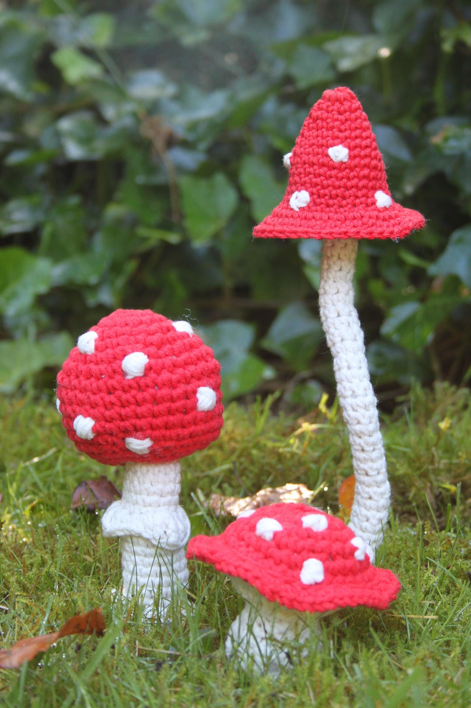

Mastered your crochet basics and ready to start your first project?
Check out the following resources to learn more or find your first project!
Learning more
Make & Do Crew. Make & Do Crew is one of my absolute favorite stops for anything crochet-related. Consider it one step up from CrochetGo! They have tutorials, patterns, and community engagement.
Joy of Motion Crochet. Joy of Motion Crochet is loaded with tons of different tutorials. Bored of the basic stitches? Learn new techniques or use as a reference when making a new pattern. Joy of Motion Crochet is also loaded with advice articles such as how to crochet on a budget or how to store yarn.
Find your project
Etsy. Etsy is a great place to search for patterns to purchase and support small crochet creators!
Crochet pattern books. Many craft stores sell booklets or cards of collections of patterns. You may even be able to find some second-hand!
Yarnspirations. Yarnspirations is just one of many online resources for crochet projects. You'd be astonished by how many patterns and tutorials you can find with a quick search online or on YouTube.








